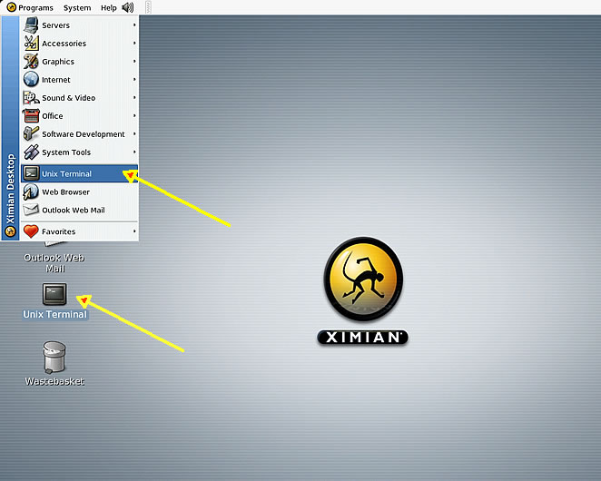

Introduction to UNIX
=================
This session concerns UNIX, which is a common operating system. By operating system, we mean the suite of programs which make the computer work. UNIX is used by the workstations and multi-user servers within the school.
On X terminals and the workstations, X Windows provide a graphical interface between the user and UNIX. However, knowledge of UNIX is required for operations which aren't covered by a graphical program, or for when there is no X windows system, for example, in a telnet session.
The UNIX operating system
The UNIX operating system is made up of three parts; the kernel, the shell and the programs.
The kernel
The kernel of UNIX is the hub of the operating system: it allocates time and memory to programs and handles the filestore and communications in response to system calls.
As an illustration of the way that the shell and the kernel work together, suppose a user types rm myfile (which has the effect of removing the file myfile). The shell searches the filestore for the file containing the program rm, and then requests the kernel, through system calls, to execute the program rm on myfile. When the process rm myfile has finished running, the shell then returns the UNIX prompt % to the user, indicating that it is waiting for further commands.
The shell
The shell acts as an interface between the user and the kernel. When a user logs in, the login program checks the username and password, and then starts another program called the shell. The shell is a command line interpreter (CLI). It interprets the commands the user types in and arranges for them to be carried out. The commands are themselves programs: when they terminate, the shell gives the user another prompt (% on our systems).
The adept user can customise his/her own shell, and users can use different shells on the same machine. Staff and students in the school have the tcsh shell by default.
The tcsh shell has certain features to help the user inputting commands.
Filename Completion - By typing part of the name of a command, filename or directory and pressing the [Tab] key, the tcsh shell will complete the rest of the name automatically. If the shell finds more than one name beginning with those letters you have typed, it will beep, prompting you to type a few more letters before pressing the tab key again.
History - The shell keeps a list of the commands you have typed in. If you need to repeat a command, use the cursor keys to scroll up and down the list or type history for a list of previous commands.
Files and processes
Everything in UNIX is either a file or a process.
A process is an executing program identified by a unique PID (process identifier).
A file is a collection of data. They are created by users using text editors, running compilers etc.
Examples of files:
- a document (report, essay etc.)
- the text of a program written in some high-level programming language
- instructions comprehensible directly to the machine and incomprehensible to a casual user, for example, a collection of binary digits (an executable or binary file);
- a directory, containing information about its contents, which may be a mixture of other directories (subdirectories) and ordinary files.
The Directory Structure
All the files are grouped together in the directory structure. The file-system is arranged in a hierarchical structure, like an inverted tree. The top of the hierarchy is traditionally called root.
 {width="397" height="224"}
{width="397" height="224"}
In the diagram above, we see that the directory ee51ab contains the subdirectory unixstuff and a file proj.txt
Starting an Xterminal session
To start an Xterm session, click on the Unix Terminal icon on your desktop, or from the drop-down menus

An Xterminal window will appear with a Unix prompt, waiting for you to start entering commands.
 {width="479"
height="316"}
{width="479"
height="316"}
M.Stonebank@surrey.ac.uk, © 9th October 2000